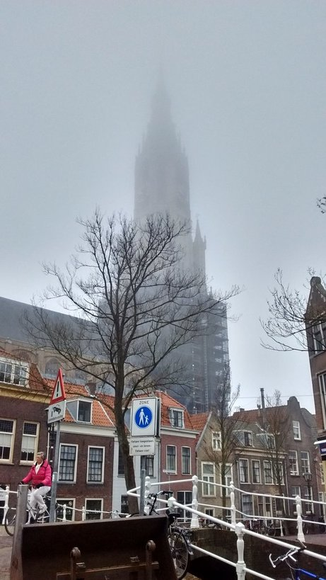
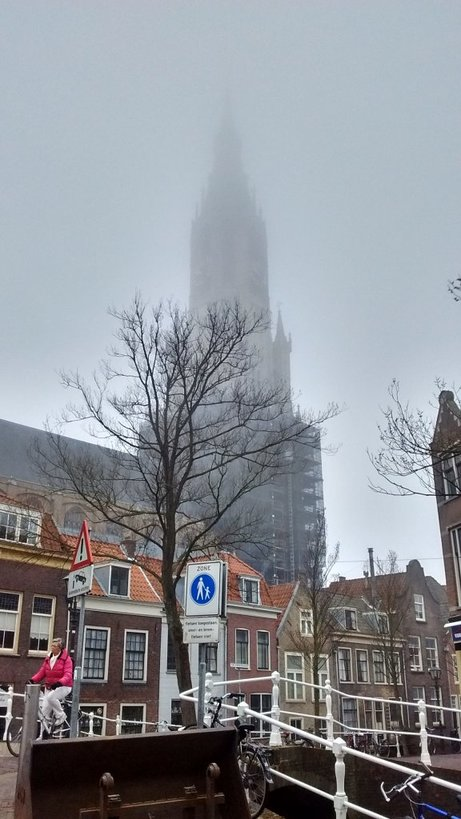

پیادهروی در دلفت-صبح هشت آوریل دوهزار و پانزده

هوای مه گرفته گاهی بوی خوبی میدهد اگر آلودگی نباشد.

هوای مه گرفته گاهی بوی خوبی میدهد اگر آلودگی نباشد.
تابستان دو سال پیش، ایران رفتنمان خیلی ناگهانی بود و دلایل اقتصادی داشت. منظورم از دلایل اقتصادی هست بلیط نسبتن مفت اما نه چندان راحت. نفری دویست یورو رفت و برگشت به تهران از استانبول.مامان آرشیدا با مادرش هماهنگ کرد و برایمان بلیط تهران به شیراز گرفت. به هیچ کس هم نگفتیم و رفتیم. ظهر گرم تابستان رسیدیم خانه مادر مریم. خواهرش در را که باز کرد جیغ بنفشی کشید. بچهها را گذاشتم آنجا و خودم رفتم خانهٔ خودمان. در خانهٔ ما همیشه باز است. در نزده رفتم تو. آرزو خواهرم با وحید شوهرش هم بودند. وحید اولین نفری بود که آمدنم را دید. مادرم -به اقتضای مادری- یک دور کامل همه سناریوهای بد -و طبعن غیر ممکن- را در کسری از ثانیه در ذهنش مرور کرد و آخرش پرسید چی شده؟ چرا اومدین؟ بچهها کجان؟ چند دقیقهای طول کشید تا رضایت بدهد تظاهر کند خیالش راحت شده. چند روز بعد خیالش راحت شد که جدی جدی طوری نشده. خبر سرزده آمدنمان مثل بمب ترکید. همه آمدند دیدنمان. عمو جعفر را خوب یادم است که نشسته بود روی صندلی روبروی دهانهٔ کولر آبی پشت بام. من نشسته بودم روی زمین و تکیه داده بودم به دیوار. خیلی زیر پوستی طوری که من اگر یک بچه چهار ساله بودم نمیفهمیدم به مادرم اشاره کرد که احسان سر مزار هم رفته؟ اگر نرفته ببرمش. مادرم هم اشاره کرد که هروقت خودش خواست و اینها. فکر که میکنم میبینم چهارساله هم اگر بودم میفهمیدم. شاید هم از آن حرفهایی بود که دلش نمیخواست مستقیم بگوید. همان کاری را کردم که آدم برای زندگی در ایران باید خوب بلد باشد. خودم را زدم به نفهمیدن. از همان اولش هم میخواستم تنها بروم. همان اوایل مادرم موقع تعریف مراسم گفته بود که خاکش نزدیک خاک بیبی است. مادر باباعلی و مادربزرگ من.
چند روز بعد یک صبح زود از خانه زدم بیرون. همهجا خلوت بود و هوا هنوز بوی خنک قبل از طلوع میداد. حس خاصی نداشتم. شهر عوض نشده بود. از کنار مدرسه شریعتی رد شدم و رفتم توی مسیر پر از خاک و خل قبرستان پشت پیرِمراد. آخرین باری که رفته بودم قبرستان در و دیوار نداشت. گویا آدم -به قول فرنگیها سو کالْد- خیّری خانهٔ امواتش را نونوار کرده بود. دو سه دقیقهای طول کشید تا قبر بیبی را پیدا کنم و بعدش یکی دو دقیقه تا برسم به خاک باباعلی. نشستم. کنارش. خودم را مجسم کرده بودم که همان لحظهٔ اول میزنم زیر گریه. با هقهق. ساکت نشستم و نگاه کردم. شعر روی سنگ را حفظ کردم. آن تناور درخت خانه شکست/بعد از این کی توان به سایه نشست. جایی که نشسته بودم سایهای نبود و آفتاب به قول ادبا تموز شروع کرده بود به سوزاندن. خاطرات هجوم آوردند. هجوم لغت خوبی است برای کاری که خاطرات با آدم میکنند. مثل قوم مغول چیزی جلودارشان نیست به جز چند قلم مادهٔ ممنوع. جای خالیاش را دیدم. توی همه خاطرات خوب. گریه آمد. با هقهق. تازه شروع کرده بودم که صدای داد و بیداد زنی از آن طرف قبرستان حواسم را پرت کرد. بچه نیستیم که چیزی تمرکز هقهق کردنمان را به هم نزند. داد و بیدادش برای جلب توجه بود. همهٔ حرفهایش را میتوانست توی دلش هم بگوید و گریه کند. جزییاتش بیش از حدی بود که برای دل خودش باشد. شاید اگر من را ندیده بود چیزی نمیگفت. عصبانی شدم. بخشی از عصبانیت مانده از قبل بود شاید. نمیدانم. هقهق کوتاه تمام شد. صبر کردم تا همهٔ قصهاش را برای تک تماشاچیاش بگوید. امید بسته بودم به آفتاب که راضیاش کند به رفتن. احتمالن آن قدری با چادر سیاه زیر آفتاب ظهر راه رفته بود که با آفتاب ملایم اول صبح صفا کند. خستهام کرد. بلند شدم. او هم بلند شد و رفت. من و مردهها به آسایش رسیدیم.
روزهای آخر برای همه سؤال بود که چرا احسان نرفته سر خاک. حریم خصوصی برای این مردم ناشناخته است. روزهای آخر با مریم و آیدا و مادرم رفتیم. آیدا از مرگ و مراسم تدفین میپرسید و من با صدای لرزان برایش توضیح میدادم. حین گریهٔ مریم سر خاک. گریه نکردم که دختر به هم نریزد.
به مادرم گفتم قبلن آمده بودم. احتمالن فامیل هم به آرامش رسیدند.
ژنی هست در وجود دختر که ریشه دارد در آبای پدری و احتمالن میرسد به خود خواجهٔ شیراز که «گفت آسان گیر بر خود کارها». چند نمونه:
«بابا تشنمه.» [ترجمه: بابا برام آب بیار]. «برو یه لیوان آب بخور بابا». «نمیخواد. تُفم قورت میدم خوب میشه».
«باید برم دستشویی. خیلی خوب شد دفعهٔ قبل که رفتم دستشویی دستم نشستم».
در حالی که روی مبل نشسته و یوتیوب میبیند «کی میخواد برای من آبمیوه درست کنه لطفن؟».
نمره درس ورزشش از همه درسها کمتر است. برایش کلاس جبرانی گذاشتهاند. توضیح ضروری اینکه در آخرین برف دلفت آنقدر بابا را دنبال خودش کشید که یک هفته مریض بودم.
تنبلی مادر تمام اختراعات بشری است. اگر روزی روزگاری آدمهای گشادی از سختی کار به تنگ نیامده بودند هیچ ماشین چاپی جایگزین میرزا بنویسها و هیچ تراکتوری جانشین بیلزنها نشده بود.
یادمان بماند همهٔ آدمهای گشاد برای لذتبردن از تنبلیهایشان حاضرند شبانهروز کار کنند. کاری که هیچ انسان غیرگشادی نمیکند. گشادها همیشه دنبال راههای سادهتر و پربازدهترند. گشادی گشادان را سهل نتوان دید و ستود. سعدی اگر گشاد نبود و زیاد مینوشت آن نثر قشنگ و مختصر و مفیدی که با کمترین لغات بیشترین معانی را منتقل میکند شکل نمیگرفت.
رد پای گشادی را در کمتر اختراع بشری است که نتوان دید. جنس این گشادی خلاقانه و فعالانه خیلی تفاوت دارد با گشادی عوامانه و منفعلانه. گشادیای از جنس کلیک. گشادی نسل جدید. گشادی را اما همچنان میشود به فال نیک گرفت.